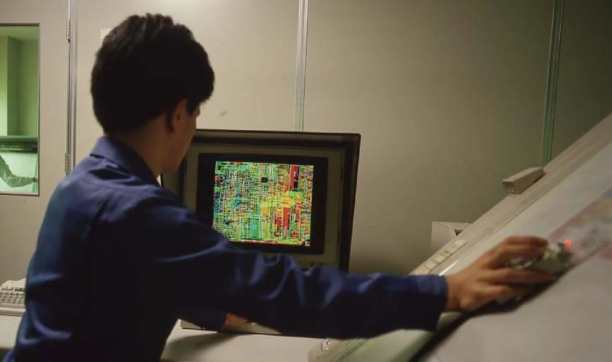
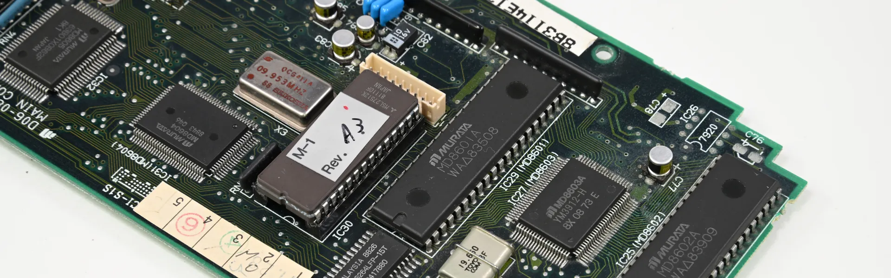
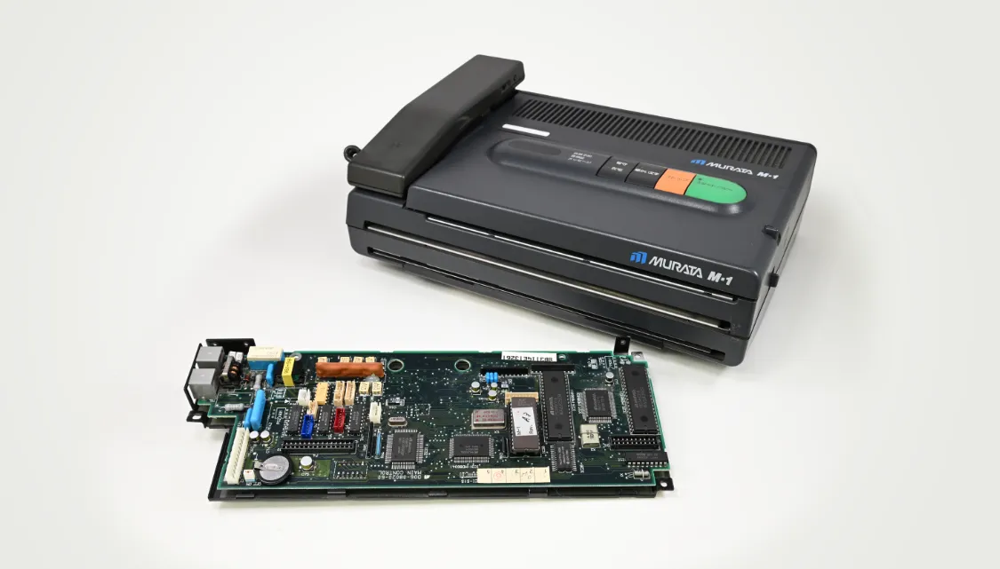

革新の分岐点 Story vol.3

紙に書いた文字や絵が一瞬で遠くに届く。
今では当たり前のように思えるファクシミリの裏には、
常識を覆し、自らの手で通信の未来を切り拓いた
開発チームの挑戦がありました。
ファクシミリ市場を一変させた
新規格の登場
1980年代になり、ファクシミリの世界に大きな変化が訪れました。従来のファクシミリは1枚送るのに数分かかり、文字や図面もつぶれがち。さらに東京―大阪間で1分あたり150円の通信費がかかるなど、長距離送信には大きな負担が伴っていました。そうした状況を一変させたのが、ファクシミリ通信の国際基準として制定された「G3規格」でした。1枚を約1分で送信できるようになり、文字や図面も鮮明に伝えられるようになったのです。この新規格の登場により、ファクシミリ市場は一気に活性化しました。
特に漢字文化を持つ日本では、書類や手書き文字をそのまま送れる利便性が評価され、需要が一気に拡大。これに応える形で製品の画質や機能が飛躍的に進化し、企業内だけでなく様々な相手との通信手段として広まっていきました。やがて日本メーカーの高性能で信頼性の高いファクシミリは、世界市場を席巻するまでになったのです。
立ちはだかった
米国メーカー製モデムの壁
しかし、ファクシミリ技術の進化には、大きな壁が立ちはだかっていました。
ファクシミリには、文書や図面を読み取ったデジタル信号を電話回線で送受信可能なアナログ信号に相互変換する変復調装置「モデム」が必須ですが、当時のモデム市場は、米国メーカーの独占状態。ムラテックを含む国内メーカーは、同社のモデムを買って組み込む以外に選択肢はありませんでした。
通信品質を左右するモデムが他社製品である以上、通信不具合が起きても自社では手の打ちようがありません。たとえば「特定の国に送信できない」といったトラブルに直面しても、メーカーに問い合わせることしかできないのです。しかも回答が届くまで数か月を要し、取引規模の小さかったムラテックの声は軽視されがちでした。
外部に振り回される状況は社内に不満を募らせ、「このままでは前に進めない」という思いが技術者たちの心に火をつけました。
「モデムくらいなら作れますよ！」
現場から始まった挑戦
時を同じくして、「大手メーカーとの競争に勝つためにどうすればいいか」という議論も社内で活発化していきました。そこで注目されたのがモデムの内製化でした。他社製のモデムはファクシミリの電子部品の中でも突出して高価で、製品価格を押し上げる要因となっていたため、「モデムを自社開発できれば、コストを抑えられるのでは」と考えたのです。しかし、モデムの自社開発という発想は、大手すら試みようとしない当時の常識から大きく外れたもの。当然、容易に実現できることではありませんでした。
そんな状況を打開したのは、ある技術者のひと言でした。
「モデムくらいなら作れますよ！」
この発言をきっかけに、まだ入社１～２年の若手社員を含む4名の精鋭が集められ、1984年にプロジェクト「ORANGE（オレンジ）」が始動。そのコードネームには「いつか必ず実を結ぶように」という願いが込められていました。
サイズが大きく、メイン基板の横に置くしかなかった他社製モデムに対し、プロジェクトメンバーは基板上に収められるコンパクトで高性能なモデムの開発を構想。製品そのもののあり方から変える革新的な挑戦のはじまりです。
シミュレーターなき時代、
手探りの開発
モデムを開発するには、デジタル信号とアナログ信号を相互変換する回路設計や、不安定な電話回線への対応、相手機器との互換性確保といった数々の最先端技術が求められます。しかも、当時はまだ回路を仮想的に試せるシミュレーションツールがなく、実際に部品を接続してテスト用回路を組み、動作を確認するしかありませんでした。
結局、苦労に苦労を重ねて作られた最初のテスト基板は、A3用紙2枚を縦に並べたほどの大きさに。その検証や調整には、大変な労力を要しました。
次から次へと出てくる不具合。サイズやコストに関する課題。一日も早い完成を望む社内の期待。さまざまな要因に振りまわされながらも、プロジェクトメンバーはモデム開発という難題に挑み続け、3年の歳月をかけてようやく自社開発モデムを完成させました。
完成したモデムは非常に小さく、当初の構想通りメイン基板上に実装することができ、ファクシミリ本体のコンパクト化にも成功。「市場に一石を投じる製品ができた」。誰もがそう思える納得の出来でした。

モデムの内製化が
市場にもたらした衝撃
1987年8月、ついに自社開発モデムを搭載したファクシミリ「M-1」が発売。モデム内製化により業界初の10万円以下という低価格を実現したM-1は爆発的なヒットを記録し、家庭やオフィスにファクシミリが一気に普及するきっかけとなりました。
業界関係者から「ムラテックのファクシミリにはモデムがない」とまで評されたコンパクトな“見えないモデム”は、市場に強烈なインパクトを残したのです。
この結果は業界全体の動向にも大きく影響しました。それまで市場を独占していた米国メーカーは低価格で小型のモデム開発に踏み切り、他の国内メーカーもモデム開発はできないまでも留守番電話やコードレス機能といった付加価値をつけることで差別化を展開。各社の動きが一気に激しくなり、ムラテックの投じた一石によって業界内の競争は加速していきました。

今なお受け継がれる挑戦の精神
モデムを自社開発したからこそファクシミリ通信に関するあらゆる課題に迅速に対応できるようになり、「ファクシミリといえばムラテック」と評されることも。大手メーカーにも引けを取らない開発を成し遂げられたのは、会社の規模にとらわれず、「挑めば必ず道は開ける」という強い信念があったからです。この挑戦心こそが現在にもつながる成長の原動力となっています。
一人の技術者の発言から始まったモデム開発という挑戦は確かに大きな実を結び、ファクシミリという通信手段の常識を塗り替える革新の分岐点となったのです。

常識を覆す技術と信念で
通信の可能性を切り拓く
ムラテックの情報機器事業